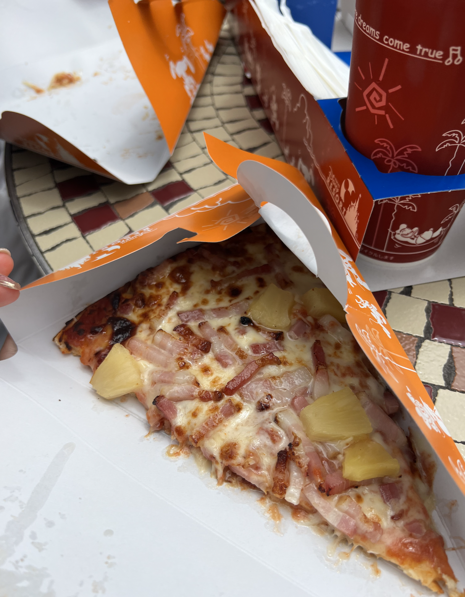

⭐️⭐️⭐️⭐️⭐️ 5/5
Local Izakaya Restauraunt
this was single-handedly the BEST yakitori (grilled meat skewers) I had. and I had yakitori 5+ times this trip. I think partially because I was with my family who were able to order for me -- when I was left to my own devices, I accidentally got intestines... twice. absolutely delicious and super special to have this meal with my family!!
⭐️⭐️⭐️⭐️ 4/5
Excelsior Cafe
getting cremia and royal milk tea is an absolute must. this was the very first dessert i got because of how much i remembered loving it years ago. cremia lives up to the hype and it's everywhere!
⭐️⭐️⭐️⭐️⭐️ 5/5
On-Yasai
a chain shabu-shabu (hot pot) restauraunt! this place was seriously so good. my family and i had this joke that on Google Map reviews of restaurants,
there would always be americans saying these random restaurants had the BEST food they've ever had. but legitimately, this was the best shabu-shabu i have EVER EVER had.
it was all you can eat and had a little i-pad where we could order endlessly. I came here twice because it was so good.
must recommend the house broth and the soy milk to cook your food in! also the make your own meatballs>>>> so good.
⭐️⭐️⭐️⭐️4/5
I Forget The Name! Conveyor Belt Sushi
this conveyor belt sushi was our very last dinner in japan and what a meal.
i love the ipad meals because it means no talking and just tapping.
heehee just kidding but seriously makes it so much more convenient. side note: in japan, for a while a lot of conveyer belt sushi places were
not running the conveyer belts because of a tik tok video of a kid licking his finger and contaminating the passing sushi!!
was a whole big thing apparently, so when we went to another conveyer belt sushi place, the belt wasn't running and i was SO disappointed.
⭐️⭐️⭐️ 3/5
Sanja Matsuri Street Food!
sanja matsuri is one of tokyo's biggest festivals and let me say it was
incredible. incredible food and HUGE crowds. like insanely busy.
there was street vendors and a bunch of options! from candied strawberries
to takoyaki. way too many options i was fr having choice paralysis. i did not get these grilled fish unfortunately
but i wish i did!! truly an amazing experience to go to a japanese festival. the energy was insane!!!!

⭐️⭐️⭐️⭐️ 4/5
tokyo disneyland food!!
tokyo disneyland was so fun. but let me tell you-- japanese ppl LOVE waiting in lines. the lines for popcorn were so long it was just not worth it for popcorn... but otherwise, the food was so good. this drink was a lemon honey jelly soda thing and it was so good. need one rn. the pizza was interesting.... not bad but... yeah! the little green alien manju tho. was so good. custard, strawberry and chocolate flavored. the dessert at disneyland alone was worth the disney trip!